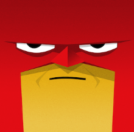

Hey guys! I'm Yuva. You probably think im a vampire at this point since I love the night, but before you jump to any conclusions have a look down below through the blinds and gaze at the sunny day while learning more about me.

Go Home
About Me
Open ME
Im 18, turning 19 on March 12th, make sure you mark this in you calender.
My favourite game OAT is Ghost of Tsushima
I love the colour red.
My Degree and Year
Open ME
My degree is in computer Science and im in my second year. 1 Year left to go YAY!.
Courses
Open ME
COMP1511 COMP1521 COMP1531
MATH1081 MATH1231 MATH1131 COMM1100
Experience
Open ME
I have had experience in working on backend using Javascript which I gained through my COMP1531 course where me and 4 group members made a clone of kahoot.
This included writing tests, working on routing, making API calls and Authentication(Hashing Passwords). This was extremely valuable experience, however i was never
taught how to code or maintain frontend. Frontend using HTML and CSS was completely self taught since the start of 2026. I love Webdev as it allows me to express my creativity
and have something to show for visually which is very staisfying. This is my first project where i strung together HTML CSS and Javascript to make a website and I beleive that
if given the opportunity I will be able to contribute well as a Trainee and learn the basics I may have skipped over and overall become a better web dev who has experience working in a team environment.